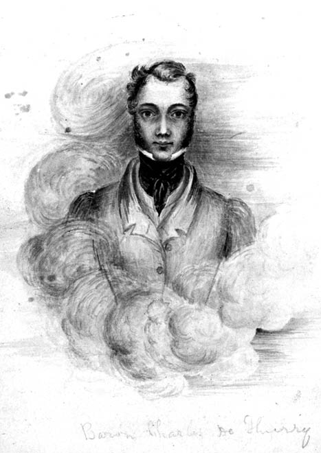
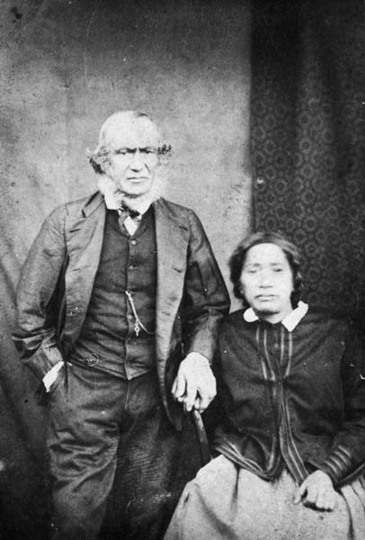

This chapter mainly concerns the Whanganui and Hokianga regions. Jerningham will eventually spend a great
deal of time in Whanganui, but this chapter isn't very relevant to most of that. There's some colourful
interludes here, but I'm going to skip past a lot of the politics of the land purchasing, which follow
similar patterns to what we saw in Wellington - hasty purchases made with whomever could be found on
short notice, dubiously translated and negotiated in poor faith. The Waitangi Tribunal's Whanganui River
Report has good details on all of this.
IN the evening a fine breeze swept us past Otaki; and in the morning we were far
north of the Wanganui river. E Kuru and his attendant were now fairly puzzled; they had never
seen their country from further out at sea than they go in their canoes; and as all the land north of
Waikanae is level and low for a great distance inland, so as not to bear any distinguishing features
from the Strait, they confounded different parts of this monotonous coast.
Jerningham actually introduced "E Kuru" or "Kuru Kanga" in the previous chapter, in a section I skipped.
He describes him as "principal chief" of Whanganui, and heaps praise upon his intelligence and
hospitable attitude. E Kuru will act as the Wakefields' principal agent in Whanganui. It will come as no
surprise to you then that the Waitangi Tribunal's report finds that "Kuru is not known to have been a
leading rangatira". In fact, there's not much information at all on who this man really was.
Dicky, however, recognised the land as being between Patea and
Wanganui. We therefore took advantage of a fine north-east breeze off the land to run along close
to it, towards the place we sought. I remained in the main-top most of the day, gazing with delight on
the extensive tract of level plains which stretched back far as the eye could reach from the edge of the
cliffs which form the shore. Smokes from two or three bays to the northward appeared to invite our
approach. As we ran along under all sail in the smooth water sheltered by the land, in some places
within less than a mile of the shore, we at one place got into shoal water, six and then four fathoms as
we neared a stony point. E Kuru warned us to stand off before his caution was confirmed by the
lead. The weather was too thick for us to distinguish the mountains, which lie far distant to the east
and south-east. We stood off for the night under easy sail; and found ourselves in the morning abreast,
of the river's mouth, about three miles off. A sandspit on the south side seemed to shut up all but a
narrow channel with foaming breakers. We now bade farewell to E Kuru and his attendant, who got
into a boat with Barrett. The chief was landed at a pa about two miles up the river; and Barrett
returned after sounding on the bar; just in time, for the wind had freshened fast from the time he left,
and shifted round to west-north-west in a squall, so that we were soon obliged to beat off the coast
under close-reefed topsails in a smart gale.
Barrett reported two fathoms as the shoalest water on the bar at half-ebb, and deep
water when once inside. He described the natives as much alarmed at our close approach to the coast,
dreading some repetition of the expedition made by the Alligator in 1834.
We gathered from him that the coast is quite low, backed by barren sand hummocks,
along the whole distance between Waikanae and Wanganui; to the north of which cliffs of
moderate height commence, and continue all round, with but few interruptions, to the Sugar-loaf Islands.
During the next seven days we were tormented by fresh gales from between west and
north during the day, and calm moonlight nights. In our various tacks towards the coast we could
frequently distinguish breaks in the cliff, which Barrett recognised as the locations of Te Namu,
Waimate, and other spots rendered famous by the visits of the Alligator, and at which he had
reposed during the great migration of the Ngatiawa.
We enjoyed magnificent views of Tonga Riro, a high snowy mountain about
ninety miles from the coast, in which the Wanganui takes its rise, and also of Mount Egmont or
Taranaki. The latter forms a beautiful object from the sea. It rises gradually and evenly from a
circle thirty or forty miles in diameter, one-third of which circle is formed by the sea. With the
exception of a small group of low hills near the Sugar-loaf Islands, the land between the sea and the
mountain forms an inverted amphitheatre, wooded down to within six or seven miles of the cliffs. The
open ground seemed also interspersed with wooded portions. The Ngatiawa natives on board with
Barrett almost cried with joy as they looked once more on what all the natives agree in describing as
the garden of the country. We found soundings in all parts of the bay between Kapiti and Cape
Egmont. The lead gave thirteen fathoms at three miles' distance from the entrance of Wanganui.
We at length anchored to the north of the middle Sugar-loaf Island, on the morning
of the 27th, in eight fathoms. A long swell from S. W. made us roll very heavily.
A volcanic peak at Sugar-loaf Point shoots up to the height of 500 feet. Two
islands lie at the distances of one and two miles respectively to the westward; and several islets and
extensive reefs are scattered about on the southern side of the point. Barrett went off in a whale-boat,
accompanied by E Ware and Tuarau, the two young deputies from Port Nicholson; but he found
the surf too heavy for landing. They succeeded in making themselves known to some natives on the beach,
two of whom swam off through the surf, and came on board the Tory.
Native Greetings.
An interesting scene now took place: Maori custom had prevented any
communication in the boat; and even for some time after they had got on board, all four sat weeping on
the deck, with their heads buried in their mats.
One of the two strangers at length rose, and after the ceremony of rubbing noses
had been performed by all, he related in a recitative dirge, beautifully affecting in its tone and
expression, the hardships and dangers which had been endured by those on shore since the retreat of the
main body of their relations. Their numbers, he said, had been wofully diminished by the predatory
incursions of the Waikato war-parties. They had repeatedly been besieged in their strongholds on
the peak or the islands; and, unable to trust themselves so far from places of refuge as to cultivate to
any extent, had lived in a great measure on fish and fern-root. "But," he said, "though we muster now no
more than threescore, we have determined to remain on our dear native land, and to struggle on through
fear and hunger. We are glad to see our brothers from Port Nicholson, and our old White friend."
Tuarau answered them in an encouraging strain; telling them how he had
brought White men to pay them for their land, and to protect them from their enemies; and how a like
protection had been needed and secured by his fathers in the south. He drew a short sketch of our
progress and intentions, and then delivered the advice of Epuni and Warepori, that they should
sell Taranaki to their good pakeha, or White man.
The next morning we landed Barrett and his train, including Tuarau. It was
declared impossible to collect the different chiefs connected with the district of Taranaki in
less than a week, as some of them resided far off. Colonel Wakefield, therefore, determined to leave
Barrett here to prepare the natives for the sale, and to proceed himself at once to Hokianga
and Kaipara, two harbours in the north of the island, where he had to discover and take
possession of certain districts which had been acquired by the Company from former purchasers before we
left England. Dr. Dieffenbach was also persuaded by my uncle to land here, and seize the opportunity of
examining Mount Egmont and the surrounding country, so highly interesting to the geologist, and of which
so little was yet known from authentic sources. The surf was still exceedingly high on the beach; but
the whale-boats landed Dicky and all his goods and chattels, animate and inanimate, by an early hour in
the afternoon, and we weighed anchor and stood to the northward, before a fine fresh breeze.
E Ware had determined to accompany Colonel Wakefield in his peregrinations;
Jim Crow considered himself now as much attached to the ship as her figurehead; and a native of Rotoma
(one of the South Sea Islands), named "Saturday," who had been whaling under Barrett, also made his
choice for the Tory.
Hokianga--Signals.
On the evening of the first of December, we came in sight of what we supposed to be
the heads of Hokianga. We had on board some printed directions, given us in England, stating that
a regular pilot lived at the entrance, and that a flag-staff on the south head was used to direct ships,
by its signals, over the bar. As we could see no flag-staff, and as the sea appeared to break right
across the entrance, we fired several guns, but received no answer. Accordingly, we stood off all night,
and in the morning ran down about ten miles to the south, and found the real place. We had been last
night off Wangape harbour, a place sometimes called False Hokianga, on account of its
great similarity to this harbour. The thick weather had prevented any observations, and our dead
reckoning had led us into this error. We passed safely over the bar, directed by the flag-staff, which
is very ingeniously arranged, so as to incline to the right or left as may be required A vessel entering
or going out has to obey its motions by standing in the corresponding direction. We found a
quarter-less-four on the shoalest part of the bar, which was not breaking anywhere. The pilot, Mr.
Martin, came on board after we had passed all the dangers, and took charge of the ship up the river.
Immediately at the entrance were high sand-hills; but the appearance of the banks
improved, being clear and level for some way back as we advanced. About twenty miles up the river the
banks had become irregular and wooded. At a place called the Narrows they approach one another within
two ships' lengths, having been as much as a mile or two apart up to that place. Two or three miles
above the Narrows, and twenty-six miles from the river's mouth, we anchored close to two other barques
which were loading kauri timber for New South Wales. On the bank to our left was the house and
store of a timber-dealer and general storekeeper. In front was a small flat island, on which were some
sawyers' and blacksmiths' workshops. On either side of this island a tributary of the Hokianga
flowed into the pool in which we lay. To the right a point of land just hid from us the buildings of the
head Wesleyan mission. In ascending the river we had passed Herd's Point. This is a tract of land that
was purchased by the agent of the Company of 1825, mentioned in the first chapter, which had become
incorporated with the New Zealand Land Company. It is a tongue of land formed by the junction of two
tributaries, and is quite level and covered with small wood. We heard that the portion purchased only
comprised about half a square mile, and high hills bound its inner side.
We found the whole country about the Hokianga river very irregular; and
though there is a good deal of valuable and available land, it is much dispersed among steep hills, and
intersected by innumerable creeks and mangrove-swamps. At low water the banks of the rivers have a most
dismal appearance; these swamps and extensive banks of mud drying out to a considerable distance from
the sound bank, and thus making the operation of landing extremely difficult and inconvenient.
Wesleyan Mission--Mr. Bumby.
During the next two days we visited different parts of the river. At Mangungu,
the Wesleyan Missionary station above mentioned, we met with Mr. Bumby, then Chairman of the mission.
We found in this gentleman a truly worthy teacher of the Christian religion. Endowed
with considerable talents, which were improved by an excellent education, Mr. Bumby could bring enlarged
views to bear on the appointed tasks of himself and his brother missionaries. His manners were conciliating,
and essentially those of a gentleman and man of the world; and he willingly conceded that our efforts and
those of the mission might work in perfect harmony.
Mr. Bumby had visited Port Nicholson in the schooner which I before mentioned; and we
now felt more than ever convinced that the native teachers left there had been led by jealousy to exceed
their duties. He imagined, however, that he had secured the piece of ground at Te Aro, on which the
houses and future chapel had been built. Colonel Wakefield told him how the natives had disregarded this
verbal agreement unaccompanied by payment; but assured him that he would be at all times ready, in
fulfilment of his instructions from the Company, to reserve a sufficient place in the future town for the
location of a chapel and mission-house of each of the two stations.
Accompanied by Mr. Hobbs, another missionary, Mr. Bumby had walked along the coast from
Kapiti to this place, doing much good on his way. In the course of our frequent visits to the
mission, and his to the Tory, we collected a great deal of useful information, and acquired a strong
friendship for the excellent Mr. Bumby. When he was afterwards unfortunately drowned by the upsetting of a
canoe in the Frith of the Thames while in the pursuit of his praiseworthy labours, by none of his friends
was he more sincerely regretted than by those who learned to esteem the virtues of his character at
Mangungu.
Bumby's glowing eulogy from Jerningham here probably owes as much to the man not living long enough to
get on Jerningham's bad side as to any of the man's own qualities. He'd been in New Zealand less than a
year at the time of meeting Jerningham, though he'd already met Te Rauparaha, and preached (in English)
at Petone and Te Aro. It was Bumby who had reserved land for a Wesleyan mission at Te Aro. (Dictionary
of New Zealand Biography, 1940)
"Wesleyan" here refers not to the Wesleyan Church (which was not founded until 1843), but to the English
Wesleyan Mission, a very small Methodist organisation which first sent missionaries to New Zealand in
1823.
At the mission were some poor farm-buildings; a press, which was worked by natives
under the direction of Mr. Woon, the printer; and a very nice chapel. The buildings were of kauri
timber, which works up very well. The rooms lined with this wood, carefully planed, had the neat appearance
of a work-box.
In different places along the banks of the river, huge logs of this valuable wood lay
ready for sale or embarkation. The few natives about the settlement were extensively employed in lumbering,
and made large profits by this work and the sale of the trees. We were much struck, however, by the
difference of character as well as physical appearance of the natives here in comparison with those of our
friends in Cook's Strait. The latter had appeared far superior in stature and muscular power. There was
here, moreover, none of the same eagerness to supply a ship with provisions. In all the harbours of Cook's
Strait, we had always been surrounded by canoes, bearing more than sufficient for our consumption. Here, on
the contrary, it was difficult to procure fresh provisions, even by sending to the residence of the chiefs.
Entirely borne away by the high profits arising from the great competition between White men for the
kauri logs, they neglected to cultivate the ground, and disdained going in their canoes to catch any
of the fish which abound near the heads. During the whole time that we lay here, we had not a single canoe
come alongside for the purpose of barter, and were obliged to procure our fresh provisions at an exorbitant
price from a haggling White dealer.
The rest of the natives, who are all professed Christians, were accustomed to collect
from different parts of the neighbourhood on the Saturday afternoon, in order to be in readiness for the
morrow's services. They occupied a collection of temporary huts at the foot of the gentle slope on which the
chapel and mission are built. I was much struck by their miseable outward appearance. They were wretchedly
clothed, covered with dirt, badly supplied with food, generally speaking weak and sickly-looking, and
altogether more abject in their manners and miserable in their condition than the slaves at the
Ohiere; who, however poor and degraded, had at least some lightness of heart and physical energy. The
missionary natives showed no curiosity as to us, and hardly turned their heads to answer a question; they
seemed to have lost all the Maori's natural vivacity and inquisitiveness, and to be a generation
whose feelings and natures were blunted.
In a word, they appeared tamed without being civilized. Together with the ferocity they
had lost the energy of the savage, without acquiring either the activity or the intelligence of a civilized
man.
They performed, however, their part of the religious ceremonies on Sunday with great
order and decorum; joining universally in the responses and hymns, and listening with marked attention to
the sermon which followed.
On the Monday they again disappeared; having excited no feeling in my mind but that of
sincere pity for their degraded physical state.
Lieutenant Macdonnell
About two miles above Mangungu, we found the establishment of Lieutenant
Macdonnell, who had been some years in this country, and who had sold his claims to certain districts of
land here and at Kaipara to the Company. We had left him in England, but had brought with us his
deeds for the lands in question, and letters to his agent, Mr. Mariner. A brig was loading kauri
spars at the river-side. A nice wooden house, belonging to Lieutenant Macdonnell, stood on a terrace about
fifty yards back from the river. Mr. Mariner had a comfortable cottage on the bank below, buried in the
midst of flourishing gardens. The fig and prickly pear were growing well in the open air; and a vineyard,
with three hundred and fifty vines of different sorts, promised great things. Some cattle belonging to Mr.
Macdonnell were running on the tops of the hills, and one of these, which we bought for the ship, was very
fair meat.
Lieutenant Thomas Macdonnell, like Colonel Kurz from Conrad's Heart of Darkness, lived in baronial
splendour, replicating a tiny sliver of England far from those shores. His residence had vinyards,
orchards, housing for staff, and even apparently his own battery of cannon. Grown rich from the kauri
trade, he made substantial purchases in Hokianga.
He seems to have been a contentious figure, and quarrelled and litigated with several parties for most of
his life. His son, also Thomas, would go on to have a distingushed role in the New Zealand Wars of the
1860s. (Te Ara)
De Thierry's wild scheme of assuming the sovereignty of New Zealand was of course
opposed by the natives and White settlers of the Bay of Islands and Hokianga. Mr. Busby printed a
circular to the chiefs, inviting them to resist his designs; and the Church missionaries took active
measures for their overthrow. On arriving in New Zealand in 1835, he was much disappointed when he found his
visionary scheme quite unlikely to succeed; and he was also foiled in the more legitimate hope of acquiring
an indisputable title to a large tract of land, by means of the 700l. which he had given to Mr.
Kendal for that purpose.
It appeared that Mr. Kendal had purchased some land for thirty-six axes; and De
Thierry had been involved in constant disputes with the vendors and their sons ever since. On one occasion
he sent to Colonel Wakefield for protection against an aggression meditated upon him and his family by a
turbulent young chief, in consequence of a dispute about the ownership of some logs of timber. An armed boat
from the Tory, sent up to his residence, had the effect of maintaining peace, until a chief named
Nene or Thomas Walker, who was much on board our ship, had been persuaded by my uncle to go and
pacify the aggressor, his own brother. Colonel Wakefield himself paid the Baron a visit, and described his
family as exceedingly interesting and well-bred, but suffering from distress and constant alarm.
Charles Philippe Hippolyte de Thierry is as colourful a character as you could find in New Zealand
history. A serial speculator, schemer and fabulist, he attempted to barter his notional ownership of a
vast tract of land in New Zealand into a governorship, trying and failing to involve both the Dutch and
the French crowns in the affair. Some of his other schemes included:
A partnership in a Paris bazaar
Five years in the Americas, possibly looking for gold
Building a canal in Panama
Electing himself King of Nuku Hiva, in the Marquesas Islands
Panning for gold in Califonia
Teaching music (he was a talented violinist)
Flax milling
He died in Auckland in 1864, a friend of Governor George Grey. (Te
Ara)

We saw nothing of the Roman Catholic Bishop, Monseigneur Pompalier, who, we were told,
had lately bought land for a missionary station on the banks of the river, and made many converts. He had
been attacked by both sects of Protestant missionaries in the most intolerant manner.
Purchase Of Deeds Of Wairau.
Colonel Wakefield took formal possession for the Company of Herd's Point, and of a
district of land opposite called Motukaraka, bought of Mr. Macdonnell, in the presence of the
original vendors. He then sent a messenger over to the Bay of Islands, to procure the attendance of
Rewa and some of the other chiefs of the Ngapuhi tribe, who had made a cession of some
land on the banks of the Kaipara river to Mr. Macdonnell.
This gentleman had obtained from the chiefs of the Ngapuhi a promise in
writing to sell him a tract of land on the Kaipara, which they had recently conquered, provided
he brought a vessel into that river. He had effected this with the Tui, a small schooner built at
Hokianga; and his consequent right of pre-emption had been bought by the Company.
We met the chiefs assembled at Hauraki, Mr. Macdonnell's station; and they
confirmed the agreement, and deputed a chief named Taonui to go with us to Kai- para and
show us the land in question.
Previous to sailing, Colonel Wakefield purchased from a lady, representing herself
to be the widow of Captain Blenkinsopp, some deeds professing to be the original conveyances of the
plains of Wairau by Rauperaha, Rangihaeata, and others to that gentleman, in consideration
of a ship-gun. They were signed with elaborate drawings of the moko or tatu on the chiefs'
faces.
On the 16th of December, we set sail for Kaipara.
On the evening of the 18th, we anchored in ten fathoms, on the tail of one of the
extensive banks which lie outside the entrance of that harbour to the distance of five or six miles from
the land. We caught in two hours enough snapper to last the whole ship's company for many days.
This next passage isn't of particular historical interest, but it is exciting and interesting so I've
left it in.
A Cool Man-Of-War's Man.
19th. --This morning I was awakened by Dr. Dorset, who told me that we were aground. As
I was swinging in a cot, I could not feel any bumping, and treated his announcement as a joke. On his
repeated statements, however, I put my foot on deck, and soon felt a tremendous bump. I dressed in haste and
hurried on deck.
We had trusted almost entirely to a chart with which we had been furnished by
Lieutenant Macdonnell in England, and which proved totally erroneous, omitting any description of a bank
which lay in the midst of the main channel as drawn by him. As it was quite calm, we had been towing in with
three boats ahead on the top of the flood-tide, and no breakers had pointed out the shoal water. One cast of
the lead had given twelve fathoms; and the next, "quarter-less-three" and a heavy bump. A long rolling swell
from the westward was increasing in force every minute.
The usual measures to get the ship off were taken, but in vain. Captain Chaffers and
the well-disciplined crew exerted themselves most creditably. Five of our guns, three or four anchors and
cables, a deck-load of spare spars which we had taken in at Hokianga, and several other heavy
articles, were thrown overboard. Kedges were carried out and hauled upon, but with no effect. Some heavy
mill-stones and paving-flags were got up out of the hold and rolled overboard. One of them was carelessly
sent through our best whale-boat, which lay at the gangway.
During half-an-hour the ship continued to bump heavily. An old man-o'-war's man, who
had joined us in Plymouth Sound, amused me much by his determined sang froid on this occasion. He
happened to have been in the Pique frigate, on the famous voyage which she made across the Atlantic without
a rudder after striking on a rock on the coast of Newfoundland
The incident with the Pique had occurred only four years prior,
in 1835.
. He was now at the helm; and coolly rolled his quid in his mouth, as he related in a low
tone the more appalling dangers of that adventure, or warned me to keep further from the wheel, each time
that a bump of the rudder made it spin round like the fly-wheel of a steam-engine. "This is only soft sand,"
said he; "I've been bumping on hard rocks for a day and night and no harm done: shear a little
further off the wheel, sir, and mind your legs with them chains, --then a bump and whir-r-r-r went the
wheel-- only soft sand, sir!" as he rolled his quid over, and again handled the wheel. "All right, sir," to
an inquiring glance from the captain as to the feel of the rudder--then another great bump, and warning, and
whirling, and rolling of the quid, and then he resumed his yarn as quietly as if nothing were the matter.
Perils In A Boat.
The tide having ebbed, it became impossible that the vessel should come off until the
next flood. Colonel Wakefield mustered a crew of volunteers from the cabin to pull ashore in the whale-boat
which remained whole, and obtain assistance from the Navarino, a vessel which we had been told at
Hokianga was loading spars about thirty miles up the river. We thus left the most useful men on
board, with the longboat and cutter, the two best boats. E Ware, Saturday
"Saturday" was a native of Rotuma (now in the Republic of Fiji),
and a whaling colleague of Dicky Barret's, introduced in a previous section.
, Mr. Heaphy, Dr.
Robinson, Dr. Dorset, and myself were to pull at the oars, thus having one spare hand to relieve the tired;
and Colonel Wakefield steered.
Just previous to our leaving, the cutter had towed the long-boat, bearing one of the
anchors, to some distance from the ship, and dropped the anchor in order to get a heave on it the next tide.
The violence of the ebb, which now ran like a sluice past the ship, had prevented them from towing the empty
long-boat back; and they had found it extremely difficult to pull only the cutter back, double-banking the
oars. In our haste we had forgotten to notice this circumstance; and we were no sooner out of the eddy
formed by the ship, than we were hurried along seawards, notwithstanding all our efforts.
The heavy swell had now begun to break on the outer edge of the shoals, and the roar
sounded louder and louder in our ears as we drifted nearer to the breakers. The day was cloudless, and the
sun, nearly at the zenith, distressingly hot. The chronometers and deeds had been placed in the
stern-sheets' for safety, but not a drop of water. We worked until we could perspire no longer, and then the
toil was excessively painful, An ineffectual attempt to anchor in one of the channels had only lost us
ground, the line having proved too short; and we were soon within a quarter of a mile of the outer breakers,
which seemed to menace certain destruction. When in the boat, we had been unable to distinguish the deep
channel, as it is tortuous, and several smaller channels perplex the observer so near the level of the
water, and the tide appeared to set across both channels and banks.
The spot where the vessel struck was two or three miles from the sea; and we were now
so far to seaward of the ship, that we were invisible to those on board.
Just as we had given ourselves up for lost, a faint breath of air was felt from
seaward; one of the natives' blankets was extended between two stretchers in the bow; and this, with the
unremitting efforts of the rowers, kept us in about the same position for two or three hours, till the
flood-tide made.
Even then we were not in perfect safety; the flood set so strongly to the northward
that we became involved among new breakers. Saturday, however, here took the steer-oar, and steered us with
great presence of mind through a threatening line of surf; when we found ourselves in a smooth channel,
gliding towards the harbour at the rate of five knots. Each rested on his oar, and we now paused, to
establish a better mast and sail with a blanket stretched on two of them.
I shall never forget the pleasure of the first drink of water at the rill on a beach
near the North Head.
We pulled and sailed about twenty miles up the harbour, which is a great estuary, five
or six miles wide, receiving the waters of several rivers; and had just gained sight of the vessel's masts
about ten miles from us, on rounding a point to the north, which opened a view of the Wairoa or
"Long-water" river, when the tide turned against us. We were thus obliged to land on the nearest beach, and
encamp till the flood. As we had worked hard since the morning, without even breakfasting, this arrangement
was agreeable enough to us; and some tin cans of preserved meat, and our small store of biscuit, were soon
finished. Clouds of mosquitoes, however, defeated our attempts to sleep. The smoke of the fire had scarcely
any effect on them, and while our eyes were filled with wood-smoke, they were stinging our knees and every
other part of our bodies that was unprotected by anything thicker than duck. Half-burying oneself in the
sand, smoking, expeditions to distant parts of the shore, or among the fern at the back of the beach, and up
the small hills by which it was skirted, --all proved unavailing to get rid of these terrible enemies; and
at the first dawn of day, as soon as the tide had turned, we were glad to leave the inhospitable beach and
get into the boat, stiff and unrefreshed. Even the natives had exclaimed against the numbers and
perseverance of the nai-nai, as the mosquitoes are called in Maori. Saturday's stolid
unconcerned face was rich to behold, as he sat by the fire stirring them out of each ear with a small twig.
A few hours' pull brought us alongside the Navarino; where we were most kindly received
by Captain Warming, as soon as we had told our doleful tale. He treated us with the most genuine
hospitality, and immediately dispatched his mate, with an efficient boat's crew, to the assistance of our
shipmates.
After some breakfast and a refreshing bath, I slept soundly for some hours; and, soon
after getting up, had the satisfaction of seeing the Tory come full sail round the point near to which we
had passed the night. She had forged over the bank into deep water, after being exposed for some hours to
heavy seas which broke over her. The mate of the Navarino had met her coming into the harbour, and piloted
her up the next morning to a berth nearly alongside of the Navarino.
Wairoa River.
The vessel was so much injured as to require heaving down, and thus it became
necessary to take out all the cargo and ballast. It was plain that she would not be again fit for
service for a month or two; and the time was fast approaching when Colonel Wakefield had engaged to meet
the first fleet of emigrant-ships at Port Hardy in Cook's Strait. As we could not tell, before leaving
England, where the first settlement would be formed, and as the emigrants were to sail in August, a
rendezvous had been anointed at this known good harbour for the 10th of January 1840. Colonel Wakefield
therefore determined to proceed overland to the Bay of Islands, in order to charter a small vessel to
take him to Port Hardy, and then join us here.
Wairoa River.
Before starting, he held some communication with the natives of this place, a few
of whom were encamped abreast of the ship. They had laughed at Taonui and the claim of the
Ngapuhi chiefs to tell their land for them. They acknowledged that they had been conquered in
former times, but said that they had long returned from their places of refuge, and were not disposed to
be conquered again. They firmly refused even to sell the land in question to Colonel Wakefield; but
offered to sell a district on the banks of another river, flowing into the north-eastern end of the
estuary.
Abandoning the task of examining, and, if of value, buying this tract, to Dr.
Dorset, whom he left in charge of affairs for the Company, Colonel Wakefield started in one of our boats
up the Wairoa river on the 26th December. He had understood that a day's walk from the head of
this river would take him to the Bay of Islands. E Ware and Saturday accompanied him, to carry
his baggage. Messrs. Heaphy, Robinson, and Dorset formed part of the boat's crew, in order to see as
much as possible of the river.
I was laid up at this time by inflammation from the bites of mosquitoes which I had
got in bathing at Hokianga; and I gladly accepted Captain Warming's kind offer of one of his
cabins while the repairs of the Tory should go on.
On the 29th, the boat returned, having landed Colonel Wakefield about one hundred
miles up the river. The party described the river as navigable for shipping up to that point, and the
banks as clothed with the finest kauri timber, from twenty miles above our anchorage. They had
passed several sawyers' and lumberers' stations, and also stations of the Wesleyan and Catholic
missions. They described the mosquitoes to be in great numbers and extraordinary vigour in every place
where they had stopped.
All the cargo was now landed and stored under tents ashore. The cabin-party also
established an encampment under a cliff nearly abreast of the anchorage. The Tory was hove down on a
sand-bank at the first spring-tide, on the 4th of January; and, after a survey by Captains Chaffers and
Warming, the necessary repairs were proceeded with. During this interval, the Bee brig from Sydney
arrived and proceeded up the river. We also had a visit from Mr. W. C. Symonds, a son of Sir William
Symonds, whom I had known in London; and who had come out as agent for a Scotch company, which had
bought land at Manukau, a harbour about thirty miles south of this. Mr. Symonds was only
accompanied by one White man; and described the natives as having been exceedingly dishonest and
troublesome in all their transactions with him. He had crossed the isthmus which lies between the
innermost part of the harbour of Manukau and the east coast, and had obtained a view of the
eastern sea. He had endured considerable hardships and privations; and returned to his station up the
Kaipara river some days after, having provided himself with some necessaries. The latter river
flows into the estuary on its south side, taking its source very near the harbour of Manukau. A
great inland water-communication thus exists along the northern part of the North Island, commencing
near the isthmus between the two coasts, and ending at the spot up the Wairoa where Colonel
Wakefield left the river; from which short overland paths communicate with the Bay of Islands and
Hokianga.
Neighbourhood Of Kaipara.
The land, however, in the neighbourhood of Kaipara harbour and its
tributaries is far from promising in appearance. The part near the anchorage is chiefly table-land clear
of timber; and the barren clay of which it consists seems to refuse sustenance to anything but stunted
fern. In the valleys cut out of the table-land by sluggish streams there are dull swamps which might
furnish more available land when drained.
The amateur boat's crew described some of the land higher up the river as of a
better character, especially some hundred acres under excellent cultivation at the Wesleyan mission
station.
Mr. White, the former Chairman of the Wesleyan mission, had chartered the Navarino,
and visited her once while she was taking in the splendid spars which were rafted down by natives.
This gentleman had been discharged from the service of the mission some few years
before, on account of his having engaged very extensively in land-buying and trading of all sorts. He
was a great land-owner on the banks of the Hokianga and Kaipara rivers; and maintained a
good deal of the influence which he had acquired as a missionary, by retaining the clerical habit and
continuing to pray and preach to the natives, even while bargaining with them in his secular capacity.
Mr. White had quarrelled, when in England, with some of the projectors of our scheme there, and had
threatened to oppose us by means of his influence
with the natives. We had, of course, now no dread of his interference, as he was
not even known in Cook's Strait, where the more important part of our purchases and friendly relations
with the aborigines were already firmly established.
About the middle of January, the Guide brig arrived, bringing letters from Colonel
Wakefield to Dr. Dorset and myself. Mr. John Blackett, formerly a mate in the navy, who had obtained a
passage in the brig from my uncle in order to join the Navarino here on her voyage to England, was the
bearer of these. He had been travelling about much in the interior of the island for some months,
chiefly in the Waikato and Thames districts. He expressed a strong interest in our proceedings;
and hoped, as Captain Warming had promised to accompany the Tory as far as Port Nicholson when her
repairs were completed, to get a glimpse of the first operations of the settlers before he should return
to England.
Colonel Wakefield informed us, shortly, that he had reached Port Hardy on the 11th
of January, without finding any ship from England; and he instructed Dr. Dorset to put some goods on
board the Guide and proceed to Taranaki, in order to complete the purchase there, and bring
Barrett and Dr. Dieffenbach to Port Nicholson. If we reached the latter place before him, we were to get
the natives to build plenty of temporary huts, in readiness for the emigrants. He had chartered the
Guide by the month.
This brig was an old whaler belonging to Sydney; originally a Calcutta pilot-brig,
teak-built, of about 150 tons burden, and swarming with cockroaches.
A Dangerous Voyage.
A crew had been collected by the great personal exertions of Colonel Wakefield and
Mr. Blackett, at the Bay of Islands, and consisted of the worst class of run-away sailors, and probably
worse regular "beach- combers" of Kororareka. The captain was a lazy, indolent old man, fond of
grog, and of sleep, and of a good charter by the month. The mate was the former doctor of the vessel
when whaling, perfectly ignorant of navigation and seamanship, and, like the captain, perfectly devoid
of influence over the rascally crew.
Dr. Dorset, Doddrey the storekeeper, and I, were the only ones who took up our
berths on board. The necessary quantity of goods being on board, we proceeded down the river; and, on
the morning of the 29th of January, left the Heads with a light south-east breeze and ebb-tide. The
captain got up to the mast-head, and a hulking, cowardly, half-bred Dutch sailor placed himself in the
chains to sound. The breeze died away as we got to the perilous pass between the "middle patch," on
which the Tory had been wrecked, and the south sand-bank. The ebb-tide set us broadside on to the patch,
on which there was a heavy break. The coward in the chains began to holloa with fright as soon as the
water shoaled to five fathoms; the skipper scrambled down from his high perch, and looked quite
perplexed; the crew rushed aft, and lowered the boats after the vessel had bumped heavily two or three
times, and jumped in without any attention to rules of precedence. In such a hurry was this done, that
ten men jumped into one of the boats before the plug-hole was stopped, and only two got into the other,
when both pulled away, leaving me and two of the crew in a very disagreeable situation on board. The
brig bumped away at a great rate; but we three managed to brail up the spanker; which caused the brig to
be head on to the swell instead of side on, and probably saved her. One of the boats was at last
persuaded to approach near
enough to the stern for us to watch an opportunity and drop ourselves in; and we
set off to pull for the shore.
The ebb-tide, however, pushed the brig along every time she lifted; and this
movement was aided by the breeze, which again sprang up and filled the square- sails which we had left
set; in a few minutes our vessel was going along, clear of the shoal, and all sails drawing. We had a
hard task to catch her and save her from sailing on to the north bank; but at length got her clear of
all dangers, and stood out to sea. We found she did not leak much, and trusted that no serious damage
had been done.
Constant southerly gales detained us at sea for some days. During one of these, I
was much surprised at the way adopted by the captain and crew to make all snug without trouble to
anybody.
One morning, on coming up on deck from the 'tween-decks where I had slung my cot, I
found a hard gale blowing and heavy sea running, the brig being hove-to under a close reefed
main-top-sail, with the helm lashed a-lee, and no one on deck or in the rigging. I looked into the
cabin. The skipper, the medical mate, and Dr. Dorset were all snoring. I went forward and peeped down
the scuttle into the forecastle, where the same happy oblivion prevailed. Doddrey was fast asleep in the
'tween-decks; and I thus found myself the only person awake on board. The old brig, however, was an
excellent sea-boat, and rode it out like a tub as she was; and I did not disturb the sleepers, knowing
we had plenty of sea-room. The next time I saw the skipper awake, he told me this was a common practice
in whalers; and said it was quite useless to tire the people by thrashing about in heavy weather. He was
very good fun with his rough navigation. He had a rickety
Sugar-Loaf Islands.
parallel ruler, a very doubtful quadrant, and a rusty pair of compasses, by means
of which he used to make a determined guess at the position of the ship every day at noon. Having
ascertained this to his own satisfaction, he would draw a cross of large size on the map, and declare
that to be our actual position, with much emphasis. He denied the existence of any such thing as
variation of the compass; and retired upon his dignity as commander whenever any approach was made to
inquiry as to the data on which he founded his calculations.
We at length managed to come in sight of the Sugar-loaf Islands on the 1st of
February, and anchored to the north of the inner one, Moturoa, or "High Island," in the
afternoon. Barrett came off from the island and piloted her to the anchorage. The Acquilla cutter came
in from the southward and anchored about the same time. Mr. White was on board; and Barrett told us that
he had been here once before, since he left Kaipara, trying to buy the Taranaki district,
but had been foiled by Dicky's superior influence.
Dr. Dorset and I landed on Moturoa, and clambered up the sides of this
conical rock to a terrace about 100 feet above the sea, where our friends had taken up their abode. We
found ourselves in a niche about twenty yards in circumference, sheltered by an over-arching rock. In
one corner was a ware puni, occupied by Barrett and his family, and in the middle a wata,
or "storehouse," stuck upon four poles about six feet high, and only approachable by a wooden log with
steps cut in it. We were received cordially by E Rangi and the children, Barrett's black cook
Lee, Dr. Dieffenbach, "Worser," the whaler whom I before mentioned as having piloted the Tokerau
whaler into Kapiti roads, and six or seven natives of both sexes.
Barrett now related to us all that had occurred since we left him here. In the
first place, constant rumours had been brought down the coast of fresh invasions projected from
Waikato. In readiness for these, he had removed all his family and goods to the island, and the
natives had stored it with firewood and potatoes. Numerous parties of released slaves had passed along
from the northward to their native places further south, spreading all the missionary doctrines; and
never omitting to preach the uncharitable one of calling all White men rewera, or "devils," who
were not missionaries, or to warn the natives against selling their lands to us, who would, they said,
drive them away to the mountains. A variation of this calumny was that we were Pikapo, (the
Maori corruption of episcopoi, or Roman Catholics,) and would therefore infallibly cut
their throats or drive them away.
Some White missionaries, and also some lay White traders from Kawia and
other places to the north, had on more than one occasion headed these agitating parties; and had
distinguished themselves by vehement support of these statements and determined attempts to obtain the
land for themselves.
Mr. White had, on his former visit, asserted his claim to the district; as founded
on his purchase of the rights of a large number of inhabitants of Taranaki, originally made
captive by the Waikato tribe, but now freed at Hokianga, Kaipara, and other places since
their masters had embraced the Christian religion.
The natives residing at Nga Motu, or "the Islands," as the land abreast of
them is called, refused to acknowledge this claim; saying very truly, that they who had never lost caste
by servitude, or taken refuge in a distant land from the persecutions of their enemies, like
Mr. White--His Letters.
the slaves to the north or their relations in Cook's Strait, had the best right to
sell the district. They had also declined Mr. White's offers to buy their claims; stating that they had
promised to sell it according to E Tiki or Dicky's recommendation, and that they meant to keep
their word.
In short, Barrett's influence and perseverance had effectually conquered numerous
efforts made to outbid us in this purchase. Too great praise could not be given to him for the zeal
which he had shown in supporting our interests, or his disinterestedness in refusing the offers of some
of these parties, even though we had much exceeded the time we had named for our return, and the natives
were becoming daily more impatient for the conclusion of the bargain. The next morning a native brought
off from the main, where Mr. White had landed, letters to Barrett and to Colonel Wakefield. The latter
was opened by Dr. Dorset, as acting agent. They both contained a statement from the worthy
ex-missionary, that "he had bought the land bounded by the Wanganui and Mokau rivers, and
a line between their sources, from the Waikato and Ngatimaniapoto tribes; and that if we
persisted in buying this district from the resident natives, those former conquerors had determined to
recommence hostilities, or to claim the protection of the British Government in securing their rights."
The natives were very angry on hearing the contents of these letters, and we had
some trouble in preventing them from going to break up the boat in which Mr. White had landed. As we
landed, he retired from the beach, where he had been preaching and praying with some of them, to a less
conspicuous situation. A Waikato chief, who had come in the cutter with him, reassured us and the
resident natives.
He said that White had given some tobacco and a few blankets to the Waikato
as payment for those whom they lost at Taranaki, which any one buying this land would have to do
in accordance with native custom. "But," said he, "we have not sold your land; more than half the
Waikato are missionaries now, and these will join with you, as brothers, against any invasion
from their heathen countrymen."
I ascended Paretutu, or "Obstinate Cliff," the Sugar-loaf Peak on the main,
to-day, accompanied by Dr. Dieffenbach. It is nearly five hundred feet high; and almost perpendicular on
the side next the sea, whose sullen roar against its base sounds diminished to the ear. The two islands,
Moturoa, and Motuomahanga, or "Isle of Refuge," appear like rocks to seaward. Inland, a
magnificent extent of country meets the eye. For some miles from the coast it seemed clear from wood;
then were extensive park-like glades and groves on the edge of the forest, which rolled far eastward in
soft undulating lines. Mount Egmont's snowy peak towered out of the clouds at fifteen miles' distance,
and Tonga Riro, at least ninety miles distant, appeared more to the north, glistening over the
most distant forest ridge. Cape Egmont to the south-west ran down gradually to a point, one gently
curved line extending from the sea to the summit of Mount Egmont. To the north a spacious bay extended
to near Albatross Head at the entrance of Kawia, dotted in its centre by some remarkable white
cliffs, called Parenunui, or "Large Cliffs." On the top of Paretutu we observed two or
three pits, the remains of places of refuge of the Ngatiawa from their enemies.
This evening a strong north-west gale set in. In this case the anchorage becomes
dangerous, and the cutter,
The "Guide" In Danger.
whose captain was warned by Barrett of the approaching storm, hove up her anchor
and walked away to windward in the first of it. Our skipper, who had irresolutely postponed his
determination to the last, at length slipped his anchor, and stood under easy sail to the northward.
Unable to tack, he came back after wearing, evidently in a worse position than before; and dusk,
accompanied by a whirling tempest of wind, lightning, and rain, hid the brig from our sight. Clinging
hard to the rock in one of the crannies on the northern side of Moturoa, we lit a beacon-fire,
and made out a light on board which proved her to have anchored again just outside the surf.
We crept into the wata, appointed for the sleeping-place of Dr. Dorset, Dr.
Dieffenbach, myself, and two natives, with no pleasant anticipations as to the fate of the brig. The
gale had come on so suddenly that we had not had time to remove any thing from the brig, and all the
Company's deeds were on board in my desk. Doddrey, however, was in charge of it, and "Worser" was
fortunately on board with one or two whaling natives.
We were rather cramped in our elevated bed-room; which was so small that the only
way of sleeping five in it was to lie across the narrow way, about four feet wide, and double up our
legs. The violence of the storm, which beat right into the niche, precluded, however, any idea of
sleeping outside; and we made the best of it.
In the morning the brig had disappeared; much to our contentment, for we had
expected to have seen her lying wrecked on the beach. She did not again make the anchorage until the
13th.
During this interval we lived in the niche on Moturoa, plentifully fed by
the natives. "Black Lee," the
cook, had a knack of making excellent dishes of pork, potatoes, pumpkins, leeks,
and fish, of which we got plenty. Then Dicky was never at a loss for a yarn, and kept us all in good
humour. A clamber to the top of the island two or three times a day to look out for a sail afforded some
employment; as the path was anything but easy, and the footing on the worn rock rather precarious. About
half a dozen huts were perched about on different parts of the rock, and caves were hollowed out
wherever the ground had been soft enough, and neat wooden doors placed to shelter the stores in them.
We landed twice on the main during these twelve days; but were glad to return to
the island to sleep, the mosquitoes being in myriads on shore. We did not walk far from the
landing-place, as the natives had no great store of food on the main, and it was neces- sary to embark
before the surf should be too heavy for our small canoes.
Dr. Dieffenbach related to us his adventures in two attempts, the first of which
had been unsuccessful, to reach the summit of Mount Egmont, which he had calculated to be about 9000
feet above the level of the sea. He had also been along the coast as far as Mokau about halfway
to Kawia, where he had been received by the natives with primitive hospitality. He has since
given, in a publication of his own,
Our monotony was somewhat varied, too, by a fire which destroyed one of the huts on
the island, and a good deal of native wealth, such as slates, catechisms, and muskets; by the arrival of
two missionary teachers, liberated slaves, who preached the old story with much vehemence; and by the
execution of native law in a case of adultery which had taken place on the main.
Missionary Hostility.
The conduct of the native teachers caused great indignation in my mind. I began to
believe that this continued opposition to our proceedings really originated from the White missionaries;
and being now able to make myself understood pretty well, told the natives my candid opinion of the
unchristian tendency of these underhand proceedings. But I took care to tell them that the
rangatira, or "chief" missionaries, would come out with the settlers, and behave very differently
from those who incited them against us. I also explained to them, that many of these bad missionaries
were shoemakers or tailors, who received money from people in England to preach the Gospel to them, but
not to make them enemies to White people; and that the clergymen who were to accompany the settlers
would preach to them and the White people together in one church.
It was here, too, that I was first struck with the absurdity of maintaining the
native language, and the extent to which this was done by the missionaries. Some of the latter, on their
recent visits, had baptized and christened most of the children, and many of the grown people. They gave
them English names; but, instead of spelling these names in English and teaching the natives so to
spell, write, and pronounce them, they taught them to pronounce them in Maori in the way nearest
approaching to the actual sounds; and then commemorated this adaptation by a printed card, on which the
transmogrified name appeared, with the date of baptism. Thus "Caroline" was printed "Kararaina;"
"Edward," "Eruera;" "Charlotte," "Harata;" "Judith," "Urihi;" "Solomon,"
"Horomona;" "Paul," "Paora." This seemed indeed an advance in order to retrograde: it
would surely have
been preferable to baptize them by native names, if they would not teach
them the English language. I also observed this straining of a point in order to preserve the native
language in the missionary translations of the Bible. The Maori language is essentially a poor
one, and possesses in particular but few words which express abstract ideas. The translators have
overcome the difficulty by coining words, written according to the Maori pronunciation which
nearest approaches to the word sought to be represented. All proper names, too, are transformed in the
native Bible like those given to the natives.
It must be remembered that the Maori, as made a written language, is
pronounced in the same way as German or Spanish; that is to say, each vowel has a distinct and
unalterable sound. No diphthongs, mute vowels, or sounds ending with a consonant, occur in Maori:
many of our sounds, such as f, s, v, j, l, g, ch, sh, th, are not in the native language, and
offer considerable difficulty to a Maori; and others which do exist, such as d and
b, have been banished by the missionaries, and included under r and p. The
Maori for "angry," for instance, is distinctly pronounced "ridi" by most natives: the
missionaries, however, disclaim the d, and write it riri. "A hill" is as certainly
buke; the mis- sionaries write it puke. With the exception of ng, a nasal sound
peculiar to the language, the natives find it difficult to pronounce two consonants without a vowel
between them.
With these explanations, the following table of manufactured words in the
Maori Bibles and Prayer-books may perhaps be understood: --
glory kororia victory wikitoria amen amine
Manufactured Native Language.
apostle apotoro catechism katekihama Jehovah
Ihowa Jerusalem Hiruharema Scriptures Karipitura Bible Paipera minister minita Pharisee Parihi devil rewera prophet
poropete Judah Hura hallelujah hareruia hymn himene book puka puka king kingi prince pirinihi Simon Peter
Haimona Pita bishop pihopa Jesus Christ Ihu Karaiti Hebrew
Hiperu Corinthians Koriniti July, and also Jews Hurai
In the book of St. Matthew alone there are the following manufactured words: --
angel anahera Judaea Huria magi maki east
ita Scribes Karaipi Israel Iharaira gold koura
frankincense parakihe myrrh mora Egypt Ihipa
time taima repent ripeneta honey honi
Sadducee Haruki shoe hu temple temepara devil rewera salt tote bushel puhera constable katipa farthing
patene marry marena oath oati throne torona mile maira publican pupirikana measure mehua pearl peara sheep
hipi wolf wuruwi grapes karepe fig piki leper
repera centurion keneturio soldiers hoia west weta hour haora fox pokiha money moni wine waina silver hiriwa brass parahi governor kawana Beelzebub
Perehepura sword hoari
Manufactured Native Language.
miracles merekera yoke ioka sabbath hapati wheat witi queen kuini south houta leaven rewena measures of flour mehua paraoa carpenter kamura Tetrarch
Titaraki dish rihi table tepera church hahi key ki
mill mira talent taranata penny pene eunuch unaka camel kamira needle ngira steward tuari cup kapa ox okiha dinner tina phylacteries pairakere rabbi rapi proselyte poroheraiti altar ata mint
miniti plate pereti ark aka kiss kihi legion rihena crown karauna vinegar winika
lot rota Sabachthani Hapakatanai seal hiri week wiki
Nearly a hundred words in that hook are represented by sounds of which the meaning
has to be explained to a native. An equal amount of instruction would teach him no inconsiderable part
of the elements of the language from which the sounds were borrowed.
Thus the comparison of the English and Maori Bibles, in which I passed a
great portion of the twelve days spent on Moturoa, induced me to believe it most essential that
the natives should be instructed in the English language as speedily as possible.
The crime of adultery was most severely punished by Ngamotu, or "the
Islands," one of the principal chiefs, on his wife. He stripped her naked, and dragged her along the
beach by the hair of the head, beating her violently at intervals. Nor did any one attempt to interfere;
the whole body of natives remaining passive spectators of the cruel penalty. The adulterer's house was
visited by the assembled relations of the wife and husband, who plundered it of everything they could
lay their hands on, while he offered no resistance, or even remonstrance, according to Maori
custom. The taua, or "foray," extended to a hut belonging to him on the island, from which
Barrett's attendants brought mats, flax, and other articles in great glee.
We had begun to despair of the reappearance of the brig; and thought it extremely
probable that the disorderly crew had taken possession, and carried her off with her cargo to some other
country.
Return Of The "Guide."
On the 10th, a barque stood in to Motuomahanga, the outer island, and
lowered a boat. The numerous signals which we made, however, did not attract her notice; and she stood
on to the northward after the boat had returned on board from a short excursion. This proved afterwards
to be the Company's surveying-barque Cuba, on her way from Port Nicholson to Kawia.
On the 13th, we made out another sail to the west-south-west. Barrett launched his
whale-boat, and we boarded the old Guide about six miles off the islands. She had fortunately left a
buoy to her first anchor; and to this we fastened her in the evening. On the night of the storm she had
ridden out the fury of the gale until about four o'clock in the morning, with her last anchor. At that
time the chain parted close to the ground, and she was in imminent danger. The crew, indeed, loudly
expressed their intention of picking out a soft place, and running her stem on to the beach.
Fortunately, Doddrey, Worser, and the captain and mate, had prepared themselves for
this emergency, and had each undertaken a part of the necessary operations for getting her under way.
The captain himself seized the wheel; the others loosed the sails and paid out the chain; and a
favourable shift in the wind allowed them to get an offing. Southerly gales outside had driven them as
far north as the latitude of Kaipara, and prevented them from returning before to-day.
14th. --The natives came on board to-day, and after some hesitation on account of a
desire for more fire-arms, agreed to sign the deed on the morrow.
Feb. 15th. --This morning I took the deed, drawn up like the former ones, ashore.
Barrett translated it, and explained its provisions. Forty-seven signatures
were then appended to it, including the women and the children, whom the chiefs
compelled to come and touch the pen, as they would be the future chiefs. Two or three young men, who had
acquired the knowledge of writing, signed their names in full. The others made a cross opposite to their
names, as had been done on former occasions.
A party of fifty or sixty natives, who had arrived from a settlement further south,
now expressed a desire to sell another tract of land adjoining that sold by the Ngamotu chiefs;
and a large number of them signed a second deed after a short negotiation. The goods were then landed in
whale-boats through the surf.
The Ngamotu natives got quietly through the distribution of their share; but
those from the southward, who were extremely wild and uncouth in their manners and appearance, although
professing to be strict mihanere, or "missionaries," could not effect it without a scramble. A
small stream divided the two parties. As soon as the southern party began to show a disposition to
scramble, one of the chiefs of the Ngamotu tribe raised an exciting shout, and cheered his
followers on to take advantage of this confusion, in order to partake of the spoil of their neighbours,
after they had stowed their own away.
They came rushing on along the hundred yards of beach which separated the two
parties, flourishing their arms. The readiness with which the others, close to whom I was sitting on a
sand-hill, dropped their own disagreements and threw themselves into a defensive attitude, was well
worthy of admiration. Along their own side of the little rill, the most stalwart warriors knelt,
protruding forward their sharp wooden spears, or grasping the tomahawk firmly, ready to spring upon
Preparations For A Skirmish.
the assailants. Behind these, others loaded the few guns in their possession, and
quietly took up a station, while behind them again the women and children handled a weapon as they bent
over some heaps of goods. And all this in perfect silence; the occasional yells of the charging party
alone being heard, as they closed rapidly in.
I was so taken up with admiration at the classical attitudes of some of the
defenders, who all remained still as statues, gazing stedfastly on the advancing enemy, after they had
once taken their position, that I had not thought of getting further from the conflict until the moment
of meeting seemed close at hand. The assailants were all seeking the weakest point as they approached;
the guns were pointed on both sides; each muscle of the defenders seemed straining with preparation for
the shock; and I suddenly thought of my own dangerous position, and flung myself flat on the ground,
expecting to hear a volley and the whistling of bullets over my head.
Barrett, however, had tripped up one of the assailants and pinioned another at this
critical moment; Worser and the women of his train had also suddenly rushed between the threatening
ranks of their relations; and after some squabbling and earnest persuasion of the most refractory, peace
was re-established. The Ngamotu seemed to treat the affair as a mere joke; but the others were
more than suspicious, and, sullenly packing their goods on the backs of the women and slaves, departed
homewards at nightfall, without the usual farewell. A strong party of vigilant warriors closed the rear
of the caravan as it crossed the sand-hills inland of Paretutu.
The two purchases extended from a spot half-way between the mouth of the
Mokau river and the Sugar-
loaf Islands, to a river called Wangatawa, south of Cape Egmont; and inland,
to the summit of the mountain, and thence to a spot on the banks of the Wanganui river, high up
its course. Had we been provided with a handier vessel and good crew, we should have proceeded to extend
the transaction by treaties at Mokau, and at Patea between Cape Egmont and
Wanganui; the chiefs of those places having been prepared for such an arrangement by deputations
which had travelled to Ngamotu in order to treat with Barrett during our absence. We were forced,
however, by the inferior sailing-qualities and appointments of the Guide, to renounce these expeditions
on a dangerous lee-shore; and turned her head towards Port Nicholson on the evening of the 16th. The
whole menagerie from Moturoa was transferred on board; three Mokau chiefs accompanied us,
in order to urge upon Colonel Wakefield the purchase of their country; and we bade farewell to our
friends at "the Islands," promising that they should soon have pakeha to live amongst them.
Barracoota Fishing.
We met a south-easter at the mouth of the Strait, and were detained by that and a calm
until the night of the 19th. During the calm, Worser amused us by an exhibition of his skill in catching
manga, or barracoota. This is a long fish without scales, exceedingly voracious, and generally found
in shoals, like the kawai. The presence of either of these fish is easily detected in a calm, when
the shoals rush along the surface of the water at intervals, marking it like what sailors call a
cat's-paw, or breath of light wind. A school, as Worser styled it, having appeared, he fitted
his machinery, and slung himself in the main-chains. At the end of a stick three or four feet long, which he
held in his hand, there was fastened, by some three feet of strong line, a piece of red wood four inches
long, two broad, and one thick. Through the end of the wood a common nail was driven, and turned back so as
to form a rude hook. On the approach of the shoal, Worser thrashed the water within his reach with the bit
of wood and the end of his rod, whirling it round with great speed. The manga soon leapt out of
water, disputing with each other for the wooden bait. Dozens were darting at one time at the hook. When one
was hooked, a dexterous heave flung him on the deck with centrifugal force, and the hook again thrashed the
water. This way of angling requires much experience and quickness of hand. Worser, who was a renowned
fisherman in all ways, caught upwards of a dozen fine fish in the few minutes during which the shoal
remained near us.
This technique of barracuda fishing is actually a traditional Māori technique, which Jerningham is
describing quite accurately. The technique appears to be unique to Māori, and exclusively used for
barracuda. That Worser has become expert in the technique is a testament to the length of time he has
spent living among Māori.
"Worser" is James "Worser" Heberley, a whaler and later a pilot for Wellington harbour. Like many of the
so called "Pākehā-Māori" of early New Zealand, he'd lived an adventurous life, fighting in battles
alongside Te Rauparaha and fleeing the inevitable reprisals. His nickname, which is now given to the bay
which became his home in Wellington, comes either from his habit of predicting that the weather would
become "worser", or is a corruption of the Te Reo Māori "whata", after the store-house he was forced to
live in until he could build his own house.
He is pictured here some time in the 1870s with his first wife, Te Wai Nahi, a prominent Te Āti Awa
woman.

Just as it fell dark on the 20th, we rounded Cape Terawiti, with a freshening
breeze from north-west. The skipper got very nervous when the squalls came whistling off the high land about
Sinclair Head; and, ignorant of this coast, seemed to dread the long lines of black reefs with which it is
fringed. We all, however, supported Dicky Barrett in his earnest declarations that it was necessary to carry
on; and made all sail to windward. A fine moon, peeping every now and then through the driving scud, lighted
us on our way; and by daylight on the 21st we were beating up within Port Nicholson, close to Somes's
Island.